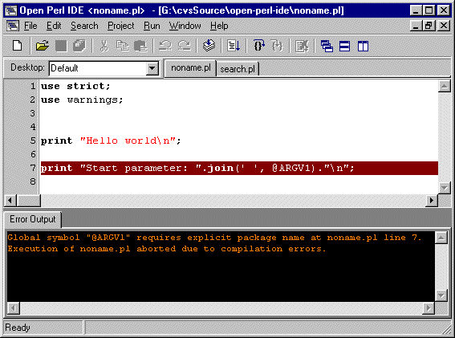

|
Open Perl IDE - User Manual Version 0.9.8.168a 4 Script Execution 4.1 Project handling An Open Perl Project consists of one executable main script (with extension *.pl, *.plx, *.cgi) and several modules (with extension *.pm) which are used or required by the main script. Start parameter, Breakpoints and Variables are stored for each project separately. It is possible to open multiple executable scripts in Open Perl IDE, but there is always only one active project. The Project Menu ("Project | Set active project") contains an enumeration of all open projects. To change the active project, select another one in the Project Menu or simply activate the corresponding editor window. 4.2 Compile and run a script Important: Open Perl IDE is not able to compile or run any scripts, if it does not know a path to "perl.exe". If the PATH environment variable contains a valid location, then "perl.exe" will be detected automatically. Otherwise it is necessary to enter a valid location into Choose "Run" from the "Run Menu", if you want to execute the active project. Choose "Compile" from the "Project Menu" if you only want to check the active project for syntax errors but do not want to execute it. Hint: You can also use shortcuts - Simply press F9 to run and CTRL-F9 to compile the active project ! If the script writes something to STDOUT or STDERR, this data is shown in the output windows "Console" and "Error Output". Both windows can be shown and hidden from the "Window | Output window" menu. Important: If the script reads input from STDIN, the execution is stopped until the necessary data has been entered in the "Console" window. If there are some syntax errors, the script can not be executed, and all errors are shown in the "Error Output" window. To view the erroneous line in the appropriate editor window, double click the error message line. Figure 4-1: Syntax Error 
|